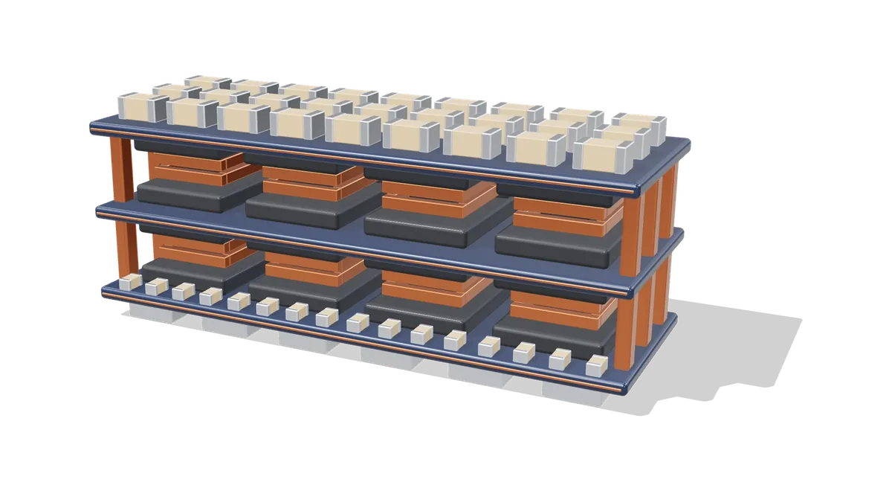
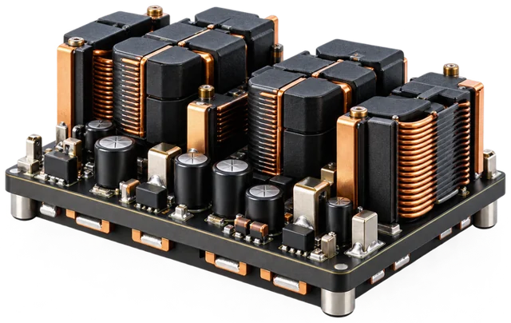
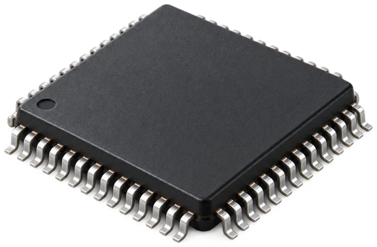
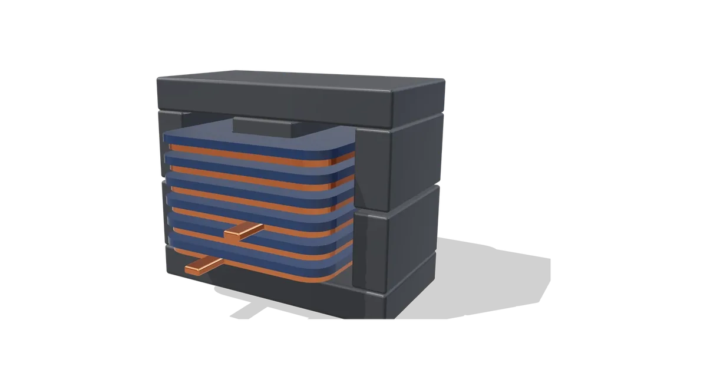
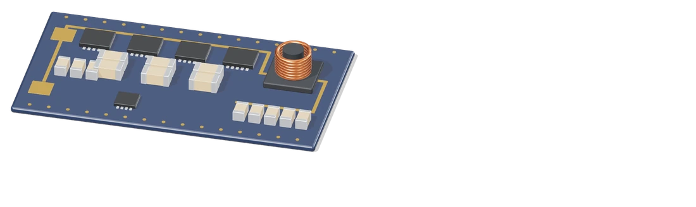
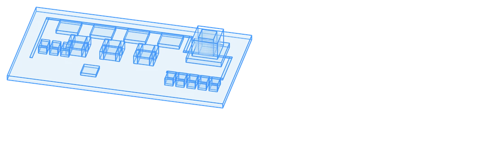
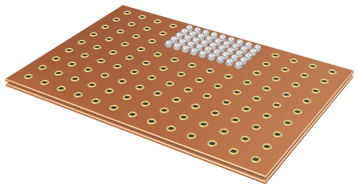
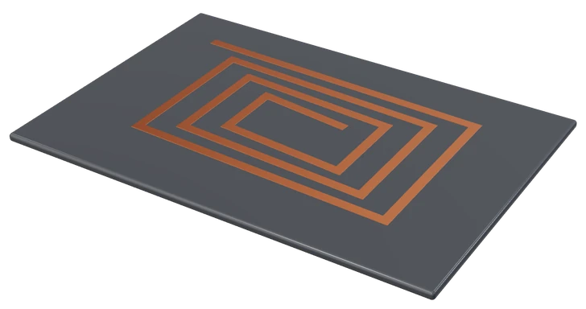
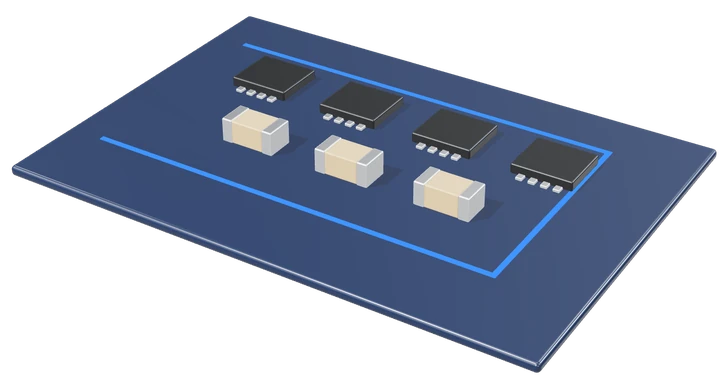
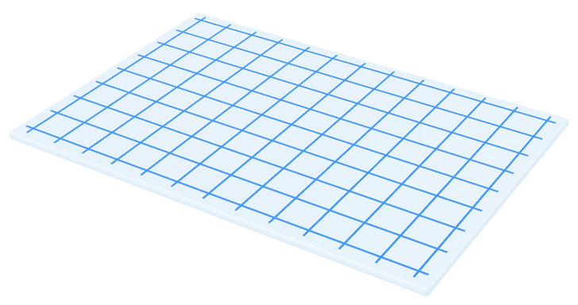

01
Circuit
Efficient, compact converter topologies, including hybrid switched-capacitor designs.
KAIST Integrated Power Circuit Lab
The KAIST Integrated Power Circuit (IPC) Lab develops high-performance integrated power electronics for emerging and future applications. Our vision is to advance integrated power circuits toward higher power density, smaller form factors, and system-level integration.

DiscreteBoard level

PMICChip level
Our vision

Efficient, compact converter topologies, including hybrid switched-capacitor designs.

Low-loss current paths from the regulator, through the package, to the processor.

Compact inductors and transformers for high-frequency conversion.


Physics-based models of the hardware, so designs are tested before they are built.
The four research areas are designed together as one power stack and applied across these fields.

PDN
Magnetics
Circuit
Digital Twin
AI DatacenterSamsung Electronics (System LSI)

AI DatacenterNational Research Foundation of Korea (NRF) · Outstanding Young Scientist Grant
Electric VehiclesHyundai Motor Company
Electric VehiclesHyundai Motor Company
Electric VehiclesConsortium led by Chang Sung Corporation, with Hyundai Motor Company and research institutes
HumanoidsKorea Institute of Machinery and Materials (KIMM)
RF SystemsSamsung Research
Digital TwinSamsung Electronics (Network)
AerospaceKorea Aerospace Research Institute (KARI) · Co-PI
Power conversionKorea Electronics Technology Institute (KETI)